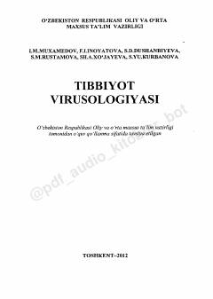

TVTibbiyot oliy o'quv yurtlari talabalari uchun mo'ljallangan virusologiya bo'yicha o'quv qo'llanma.
Ushbu o'quv qo'llanmada viruslarning biologik xususiyatlari, virusologik laboratoriyalar ishi, viruslarni o'stirish va ularni aniqlash usullari batafsil yoritilgan. Shuningdek, turli xil infeksiyalarda virusologik diagnostika usullari va tibbiy virusologiyaning asosiy yo'nalishlari ko'rib chiqilgan. Kitob tibbiyot oliy o'quv yurtlari talabalari, magistrantlar va soh mutaxassislari uchun mo'ljallangan.